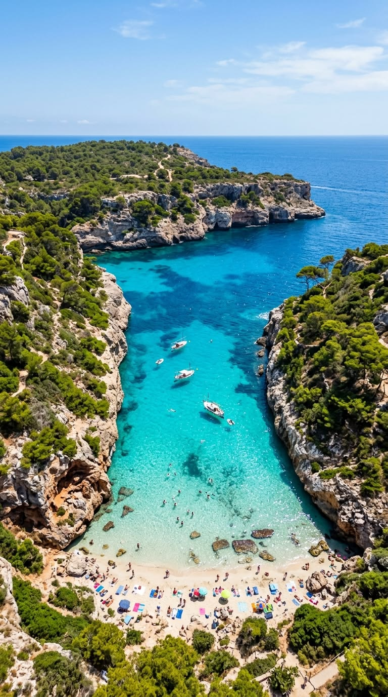
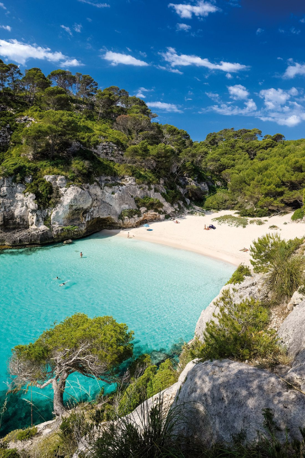

Zeven dagen zon, strand en zwembad
Mallorca
2027
7 t/m 14 mei · met zijn zessen

Villa Ca na SaurinaVandaag
{{ vandaagLabel }}Weer en zee
Gemiddelden voor mei. Reken op zo'n zes regendagen in de hele maand.
Nog te doen
Direct regelen
Reisgenoten
Fotodagboek
{{ dagTitel }}
{{ dagThema }}
Tik een speld aan voor de details. Rijtijden zijn een ruwe schatting vanaf de villa.
{{ plekkenTitel }}
Iedereen die meegaat mag stemmen en vinkt aan wat we echt doen. De top drie zetten we in het dagprogramma.
Shortlist
Foto's van de plekken en uitjes komen van Wikimedia Commons, onder CC BY, CC BY-SA of de Free Art License. De maker en licentie staan bij elke plek zelf vermeld., Ralf Roletschek, Rikki Mitterer, Alain Gavillet, Isiwal en Oltau
Kies wie de app gebruikt. Je stemmen op ideeën en de vinkjes op de paklijst komen op jouw naam te staan, zodat de rest ziet wat jij al hebt gedaan.
Iedereen krijgt dezelfde app met een eigen naam erin. Ze openen de link, kiezen wie ze zijn en kunnen daarna meestemmen en de paklijst aanvullen.
Typ twee letters of meer. Je zoekt in één keer door de plekken, de restaurants, het dagprogramma, de ideeën en de paklijst.
Wat de anderen in de app hebben gedaan. Alles wat nog van jou wordt verwacht staat op het overzicht onder Nog te doen.
Nieuw voor jou
De eerste drie lijstjes liggen op 12 tot 20 minuten van de villa: het strand van Platja de Muro, de oude stad van Alcúdia en het natuurgebied S’Albufera. Onder “verder op het eiland” staan adressen bij de plekken die we op de kaart hebben staan.
Voeten in het zand · Platja de Muro
Oude stad · Alcúdia
Tussen de velden · S’Albufera
Verder op het eiland
Adressen bij de plekken die al op de kaart staan, van de cellers in het binnenland tot de rotsen van Cala Deià. Openingstijden wisselen per seizoen, check ze op de dag zelf.
Dit moeten we proberen
{{ restoNaam }}
{{ restoSfeer }}
Wat ze hier serveren
Een greep uit de kaart, geen officieel menu. Check de actuele kaart en openingstijden bij het restaurant zelf.
De foto bovenaan is een vrij te gebruiken sfeerbeeld. Eigen foto's van het restaurant sleep je hier naartoe, bijvoorbeeld uit Google Maps of hun eigen site. Ze blijven per restaurant bewaard.
Villa Ca na Saurina
Vijfkamervilla van 200 m² met eigen zwembad in Crestatx, gemeente Sa Pobla. Zeven nachten via Interhome, 7 t/m 14 mei 2027, plek voor zeven personen.
Wie slaapt waar
Goed om te weten
Afstanden vanaf de deur
De foto's van Interhome en Booking zijn auteursrechtelijk beschermd, dus die haal ik er niet automatisch bij. Sleep ze hier uit je boekingsmail, dan staan ze in de app.
{{ plekNaam }}
{{ plekNote }}